10 Strategies for
User-Centered Documentation
Created by Tom Johnson / @tomjohnson
idratherbewriting.com
Observations in a usability lab

Contrasting approaches
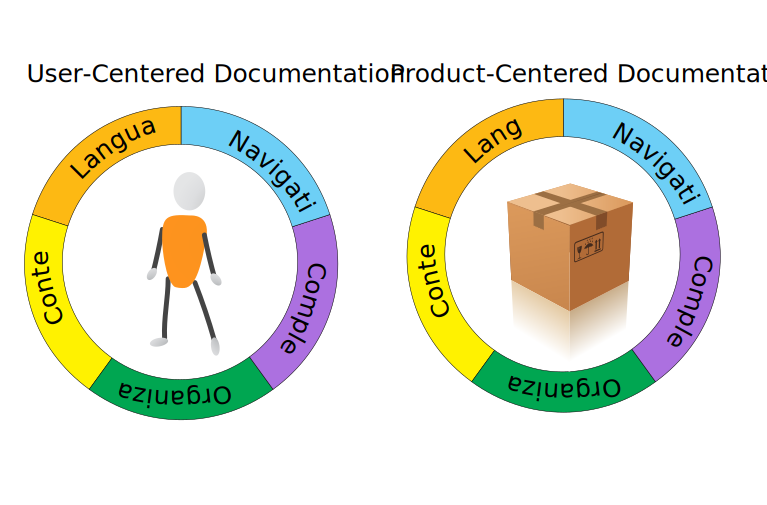10 patterns of user behavior with doc
- Users are frustrated, impatient
- Users read non-sequentially
- Users organize the same items differently
- Some users are beginners
- Some users are advanced
- Users resist going into help
- Users desire simple instructions
- Users want to begin right away
- Users gravitate toward visuals
- Users may not speak your "language"
Keyboard Shortcuts
| Next Slide | Space bar |
| Full Screen | F |
| Thumbnail View | Esc |
View online at bitly.com/tom-ucd
Note: Many slides move down instead of to the side, so use the space bar to advance slides.
P1: Users read non-sequentially
You can just read the sections about the tasks you want to do.— John Carroll, The Nurnberg Funnel
Topic-based authoring is great. Where do things go wrong?
Wrong: Building blocks ≠ presentation
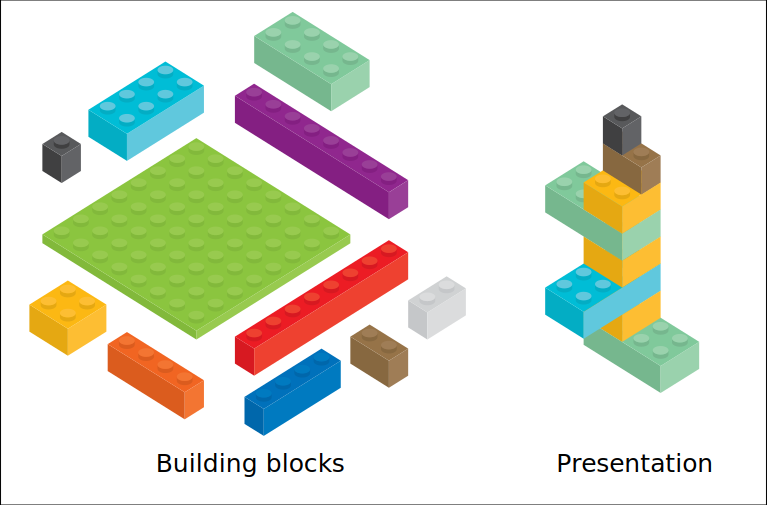Wrong: Don't auto-burst print books
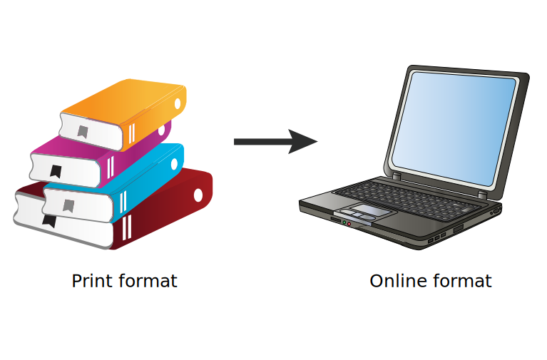The Frankenbook
A Frankenbook is organized neither for linear reading, nor for random access. No matter where you land in it, you are in the middle of a maze with buttons to move up, down, or sideways, but no means of finding the end of any thread of narrative, great or small. Every page is page 297 and none of them answer your question .... .— Mark Baker, Every Page Is Page One
Strategy: Treat "Every Page Is Page One"

Characteristics of "Every Page Is Page One" topics:
- Self-contained
- Specific and limited purpose
- Conform to type
- Establish context
- Assume the reader is qualified
- Stay on one level
- Link richly
Strategy: Create self-contained topics

Strategy: Provide context before

Strategy: Provide context after

P2: Users feel frustrated, impatient
How Users Read on the WebSummary: They don't. People rarely read Web pages word by word; instead, they scan the page, picking out individual words and sentences.
— Jakob Nielsen, Nielsen Norman Group
Strategy: Use article summaries
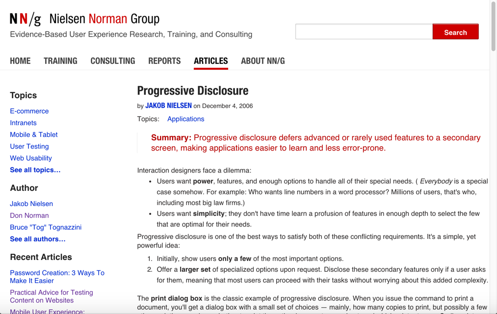Strategy: Use lots of subheadings

Strategy: Structure information in lists

Unreadable content — no list formatting
Nebraska is filled with internationally recognized attractions that draw large crowds of people every year, without fail. In 1996, some of the most popular places were Fort Robinson State Park (355,000 visitors), Scotts Bluff National Monument (132,166), Arbor Lodge State Historical Park & Museum (100,000), Carhenge (86,598), Stuhr Museum of the Prairie Pioneer (60,002), and Buffalo Bill Ranch State Historical Park (28,446).
Rewritten for readability — 124% usability improvement
In 1996, six of the most-visited places in Nebraska were:
- Fort Robinson State Park
- Scotts Bluff National Monument
- Arbor Lodge State Historical Park & Museum
- Carhenge
- Stuhr Museum of the Prairie Pioneer
- Buffalo Bill Ranch State Historical Park
Strategy: Make sentences short and easy
We're thinking "great literature" (or at least "product brochure"), while the user’s reality is much closer to "billboard going by at 60 miles an hour." — Steve Krug, Don't Make Me Think

P3: Users organize same items differently

Where would you find this in a store?

Physical spaces vs. digital spaces
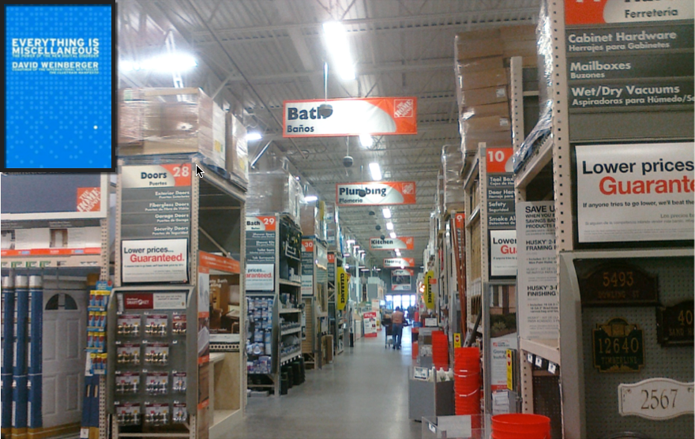Faceted navigation
Faceted navigation is arguably the most significant search innovation of the past decade.
— Peter Morville, Search Patterns
Strategy: Leverage facets if they make sense

Tags are practical facets
With tags, your files and photos can be in two, three, or more “places” at once.— Gene Smith, People-Powered Metadata for the Social Web
Strategy: Use tags to provide other groupings

Another example of tags

Hierarchical Table of Contents fail
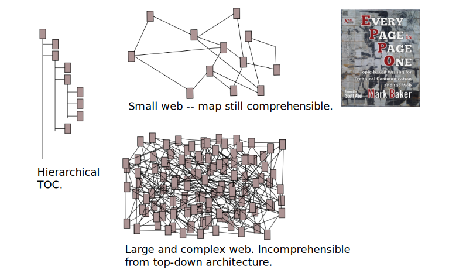Strategy: Provide "Bottom-up" navigation
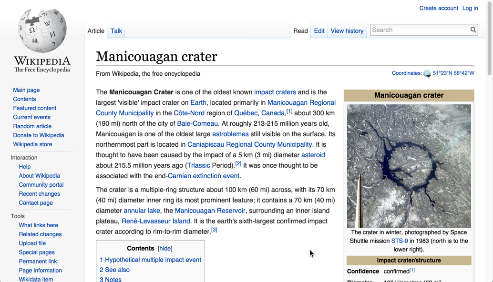Example from "Every Page Is Page One
P4: Some users are beginners
Strategy: Create "getting started" guides

Also "Getting Started" Guides


Strategy: Provide sequential tutorials

Strategy: Give the big picture

P5: Some users are advanced
Strategy: Create "quick reference" guides

Strategy: Emphasize troubleshooting information
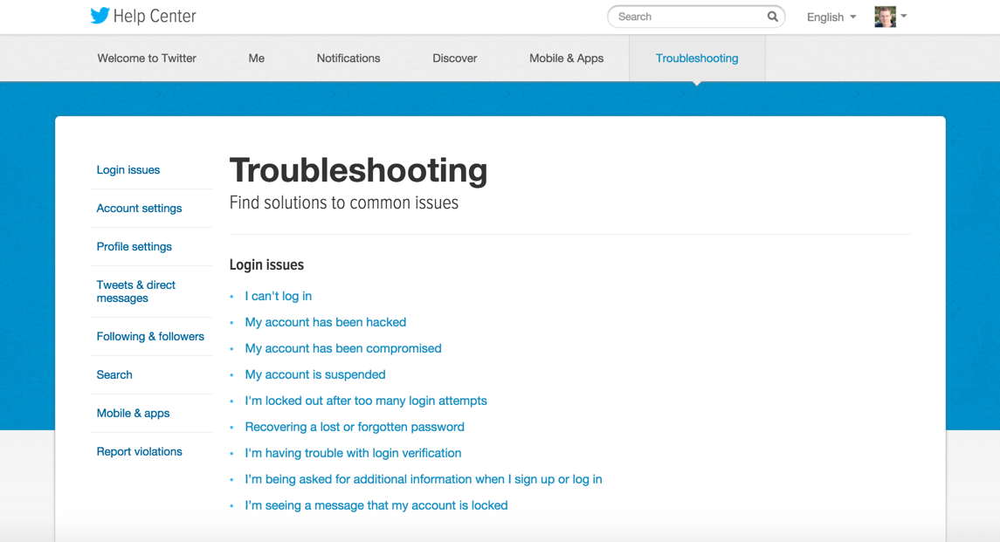StackOverflow focuses on troubleshooting

Strategy: Use homepage as routing page
P6: Users resist going into help
The conclusion of most studies about how people use help is that people don't use help.-- Mike Hughes, I'd Rather Be Writing podcast
Audio excerpt

Fitt's Law
The further a user must travel with their cursor, the less accuracy the user will have in reaching the target object.
— Travis Lowdermilk, User-centered Design
Strategy: Bring help into the UI

Strategy: Make the UI more helpful

Half of the UI is text
WordPress blanked out
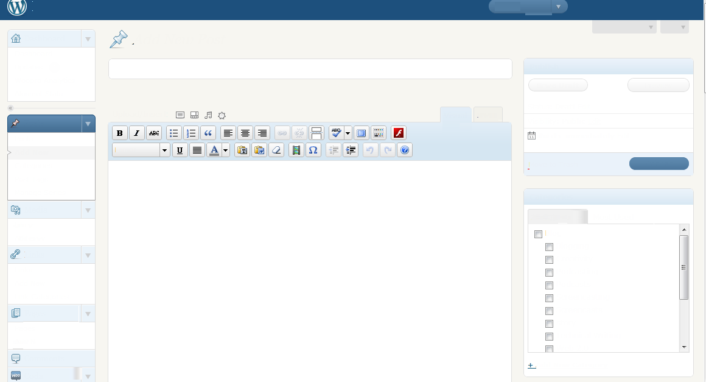Youtube blanked out
Strategy: Show tasks in the UI
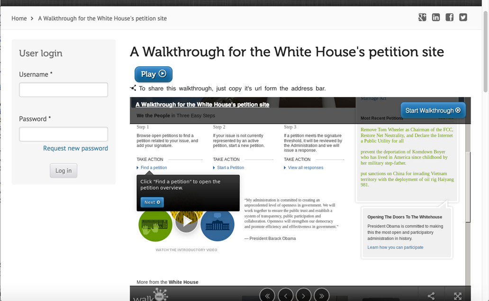P7: Users desire simple instructions
The same technology that simplifies life by providing more functions in each device also complicates life by making the device harder to learn, harder to use. This is the paradox of technology.
— Don Norman, The Design of Everyday Things
Documentation for a complex product

Special outputs per role?
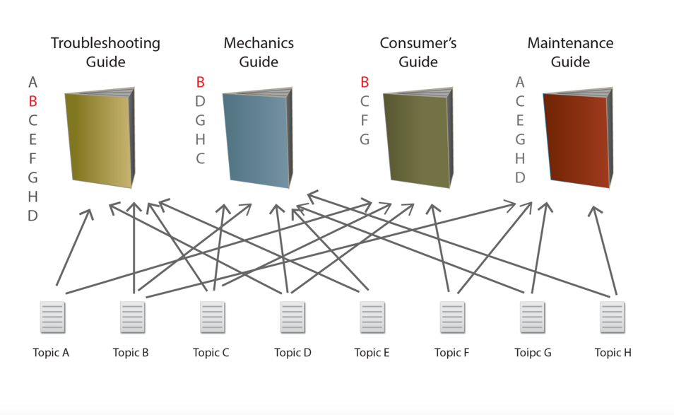Strategy: Provide filtering mechanisms
Include it all. Filter it afterward.— Dave Weinberger, Too Big to Know
Strategy: Apply progressive information disclosure
Progressive disclosure is the best tool so far: show people the basics first, and once they understand that, allow them to get to the expert features. But don't show everything all at once or you will only confuse people and they will waste endless time messing with features that they don't need yet.— Jakob Nielsen, Interaction Design
Example of progressive information disclosure

An example of progressive disclosure in the UI

Strategy: Create different sidebars for different sections

P8: Users want to begin right away
The premise behind minimalism is that people learning to use computer software are impatient, mentally active, and curious. They want to begin right away getting their work done.
Strategy: Focus on real-world tasks

Strategy: Provide hello-world tutorials

Strategy: Keep the focus in the task domain

P9: Users gravitate toward visuals

Strategy: Use visuals to reduce cognitive load

Chartjunk doesn't enhance learning

Show workflows and processes

Strategy: Reduce distraction, focus on the point

Strategy: Worry about ideas, not high art

P10: Users may not speak your "language"
Science has become more complex, more specialized—every sub-discipline has its own vocabulary.— Stephen Hall, How Scientists Are Learning to Write
Peter Morville: Each search informs the next
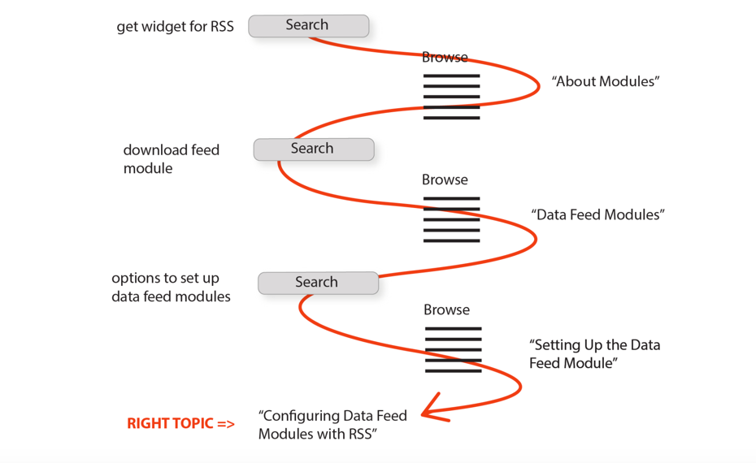Strategy: Define unfamiliar terms in a glossary
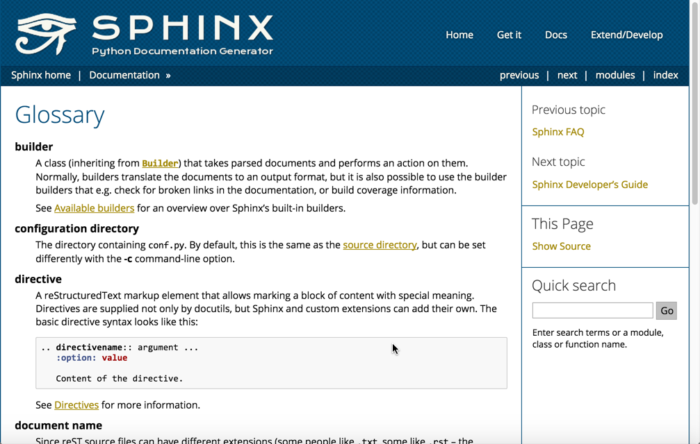Strategy: Put keywords, synonyms in page metadata
Add keywords in topics
---
title: Access ACME
permalink: /access/
tags: [getting-started]
keywords: logging in, authentication, login
---
Push keywords into page metadata
Strategy: Write for users who *really* don't speak your language
How to test content
Give users a problem to solve with your docs
Observe users do tasks during training sessions
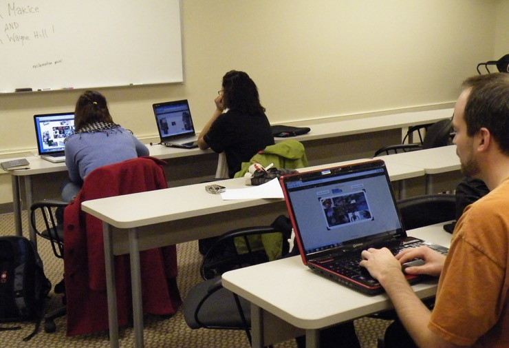Test users directly on reader comprehension
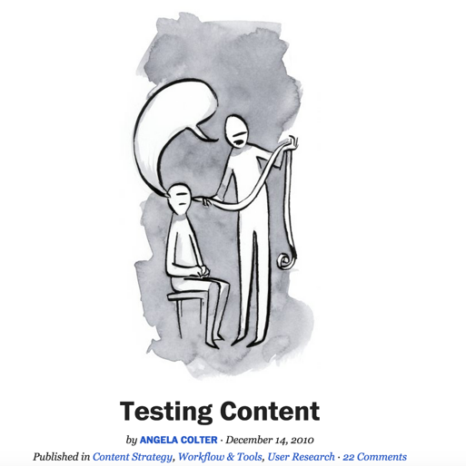Summary
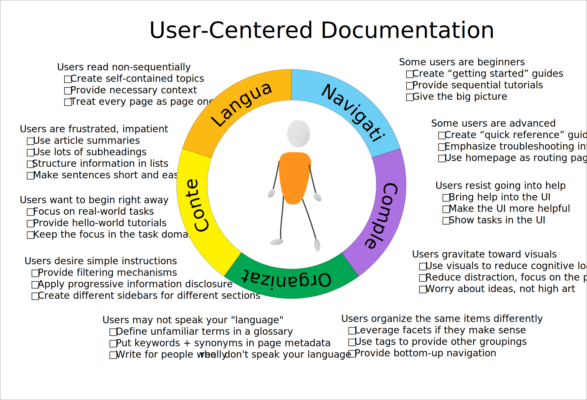Thanks!

Tom Johnson
— idratherbewriting.com
— @tomjohnson
— tomjoht@gmail.com
Image credits
- Various vector images from Vecteezy
- Various images from Flickr: ZBW Usability Lab,photolibrarian, Nathan Congleton, Graham, Kevin Makice, Camilla Lindskoug
- Cartoon from Ben Minson
- ninja images from 7-themes.com and clumsy ninja